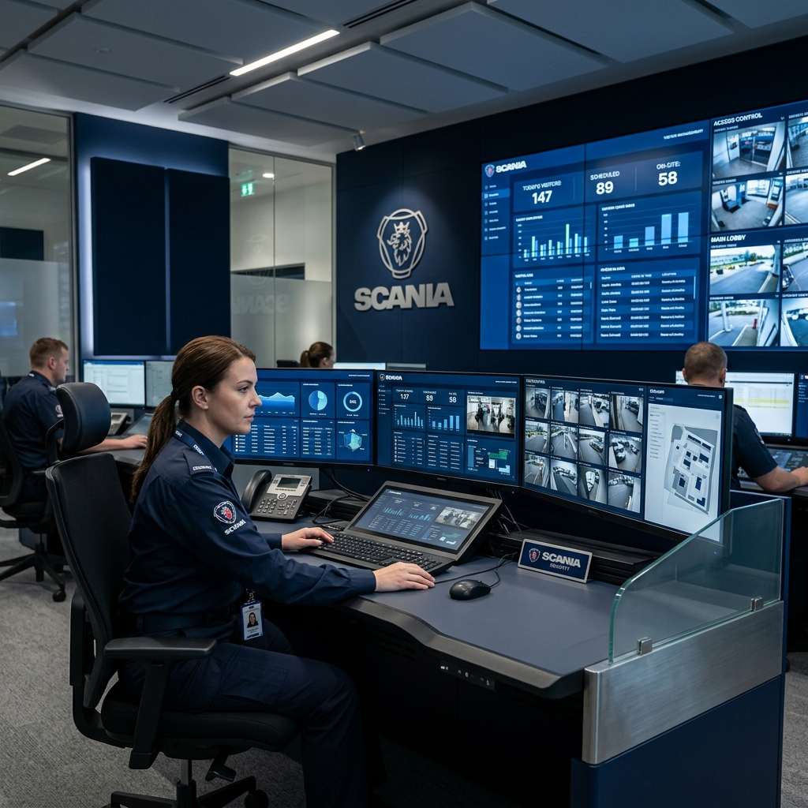
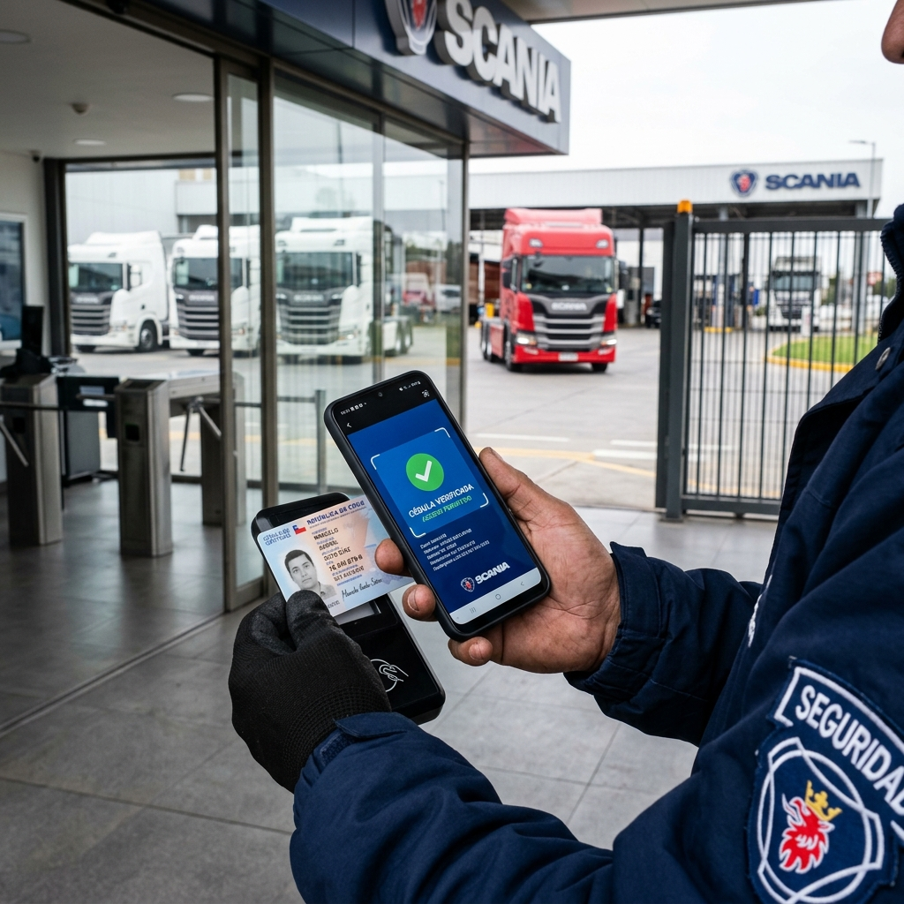
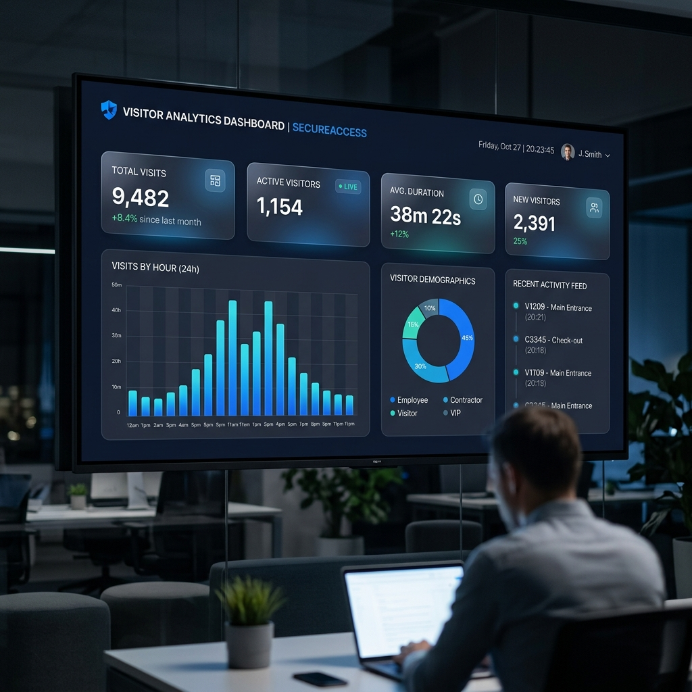

Escaneo
La cámara del celular lee el código PDF417 del reverso de la cédula.

Plataforma integral de control de visitantes, seguridad perimetral y trazabilidad operativa para instalaciones Scania Chile.
Presione → o haga clic para avanzar
Sin registro digital, no hay trazabilidad de quién ingresa o sale de las instalaciones en tiempo real.
Bitácoras en papel se pierden, son ilegibles y no permiten generar reportes ni auditorías automatizadas.
Regulaciones exigen un control verificable de personas en instalaciones industriales y plantas operativas.
Sistema de escritorio autónomo que no requiere internet. Opera en la red local de la planta con base de datos propia, escáner móvil y modo kiosco de seguridad.

Escaneo de cédula (PDF417) o ingreso manual. Autocompletado para visitantes recurrentes.
Cierre de visita con cálculo automático de tiempo de permanencia en planta.
Marcado de visitantes conflictivos con bloqueo automático de ingreso y registro de observaciones.
Estadísticas en tiempo real, historial completo filtrable y exportación a Excel.

El guardia usa su celular Samsung como escáner de cédulas. La información se sincroniza instantáneamente al PC principal vía red Wi-Fi local.
La cámara del celular lee el código PDF417 del reverso de la cédula.
Los datos se envían al PC por Wi-Fi en menos de 1 segundo vía bridge en puerto 3001.
El PC autocompleta el formulario y el guardia solo confirma e indica destino.
Panel de control con KPIs de seguridad, gráficos de frecuencia y métricas operativas que permiten tomar decisiones informadas.

Electron + Next.js en modo kiosco. Pantalla completa, auto-ajuste de zoom según resolución del monitor.
Puerto 3000
Servidor Node.js que recibe datos del celular Samsung y los envía al PC principal en tiempo real.
Puerto 3001
SQLite con Prisma ORM. Almacenamiento local sin dependencias externas ni costos de hosting cloud.
Archivo local .db
Desde el Historial, el guardia marca a un visitante como conflictivo e ingresa el motivo en una ventana dedicada.
Al ingresar el RUT de una persona conflictiva, el sistema muestra una alerta roja prominente y bloquea el botón de ingreso.
Un administrador puede quitar la marca de conflictivo y restaurar el acceso cuando lo considere apropiado.
El sistema previene el ingreso de personas marcadas, protegiendo al personal y las instalaciones.
Control total de quién entra y sale, con alertas automáticas para visitantes de riesgo. Trazabilidad completa.
Registro en menos de 15 segundos con escaneo de cédula. Eliminación total del papel y la bitácora manual.
Exportación a Excel, filtros por fecha, puerta y área. Datos listos para auditorías y compliance.
Sin servidores cloud, sin licencias mensuales, sin internet. La inversión es única y el sistema es autosuficiente.
Soporte multi-empresa, multi-puerta y multi-guardia. Preparado para crecer con las operaciones de Scania.
El guardia opera desde su celular Samsung en terreno. Sin hardware adicional, sin lectores externos costosos.
Scania Access System transforma el control de accesos en una ventaja competitiva: más seguro, más rápido y sin costos recurrentes.
© 2026 ONLINE SYSTEM SpA — Todos los derechos reservados